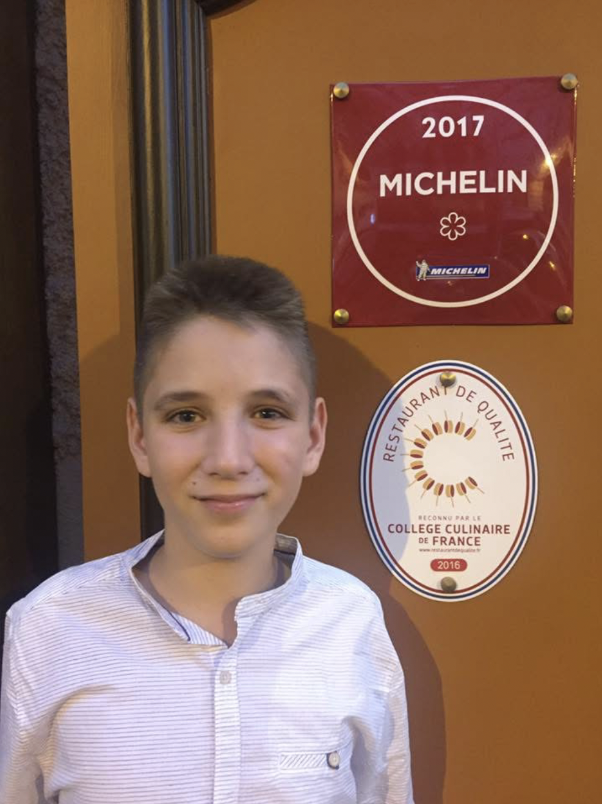

Introduction
With biometric tech getting more advanced every day—face scans at airports, photo verification on apps, etc - I started wondering how good ChatGPT could be at doing something kind of similar. That being how well can ChatGPT guess someone’s age just from a photo. Obviously, this isn’t what it was built for, and it’s not a true face recognition tool. But since LLMs are really good at reasoning and pattern-matching, I wanted to see how far that could stretch. So, I ran a little experiment to test how well ChatGPT could estimate ages from pictures of friends, family, and myself.
Broader Age Range
I wanted to start the experiment with a wide range of photos - particulary kids, teens, adults, and eldery people. In order to do this I plan to use a photo of me as a kid, a photo of my good friend, a photo of my mother, and a photo of my grandmother. This was so I could see how ChatGPT would handle the full age spectrum. At first, Chat wasn’t eager to play along. When I uploaded the first image, it gave me a disclaimer-heavy response: “Sorry, I can’t tell how old this person is just by looking at the photo. Age estimation from an image isn’t always accurate, and I can’t make assumptions about real people…” You get the idea. Basically, it didn’t want to guess.
But once I pushed a little and told it to just be confident and try, things changed and it started guessing ages (relatively accurately).
Below is the first picture of me from when I was 12:

ChatGPT said it could confidentally assess that the person in the picture was 12 years old - one year off. Granted it is easier with kids due to the fact that the ages look so different. Next I gave it this picture of my friend evan who was 19 at the time of this picture I believe.
ChatGPT said “I’d estimate this person is 18 to 20 years old — likely a college student or just out of high school.” Again a relatively accurate estimate. Next, I gave this picture of my mother:
This is the ChatGPTs first relatively inaccurate guess. Chat said “Based on her appearance in this photo, I would confidently estimate that this person is around 38 to 42 years old.” However, my mother is 48 in this image meaning that Chatgpt was off by 6-10 years. Granted it could be because my mother looks on the younger side. This just shows that it is hard to accuarately guess in older ages due to large variability. I finally gave it a picture of my grandma:
Chatgpt guessed that “Based on her appearance in this photo, I would confidently estimate that the woman is around 65 to 70 years old.” This is essentially 100% accurate since my Grandma is 65, but ChatGPT did use a relatively large range of age.
Section Thoughts
Overall, ChatGPT was actually pretty solid at estimating people’s ages. For most of the images, it landed within a reasonable age range—even if it didn’t always hit the exact number, it was in the ballpark. The only real ‘outlier’ was my mom’s photo where the range didn’t include her age - but that could be chalked up to her looking young. I also noticed that the model tended to give slightly wider or more cautious age ranges for older individuals. That kind of makes sense though—features tend to smooth out as people age, so it’s naturally harder to pin down an exact number from a photo alone.
Now that we’ve tested a wide age range, I wanted to narrow in on a very specific group: 21-year-olds. The idea is to see if ChatGPT can consistently identify people around this key age. Why? Because in theory, something like this could eventually help with things like verifying someone’s age for alcohol purchases or online ID checks. Obviously, it’s not perfect or ready for real-world use—but it’s worth seeing how close the model can get when the margin for error actually matters.
21 year olds
To see how well ChatGPT could identify a key age, I uploaded 10 photos of people I know who are all exactly 21 years old. The goal was to test whether the model could consistently land in the right range—something that could be useful for future applications like verifying legal age for alcohol or restricted content. Remember in the beginning Chat didnt think it confidentally guess age at all. However, I gave it the image below along with 9 other similar ones and it was relatively accurate. Below is the image:
In this image ChatGPT returned “Based on appearance in this image, I’d estimate this person is around 20 to 23 years old.”
When I asked ChatGPT if they thought this person could drink, it returned the following:
“Based purely on appearance, I’d say this person looks like they could legally drink—they fall within the typical 21+ range.”
A lot of my other uploads looked very similar to thing (to save the reader time I will only upload the picture of the one above). Across the 10 samples, it guessed within the 20–25 range for the majority, with an average estimate landing right around 22 to 24 years old. It hit the correct range 80% of the time, often guessing a year or two older than 21.
Section Thoughts
While it’s definitely not a replacement for proper ID verification, the accuracy here is promising—especially considering this wasn’t what the tool was designed for. With some added coding or fine-tuned training, a future version of this tech could realistically support basic age estimation systems.
Conclusion
While ChatGPT clearly isn’t meant to be a facial recognition tool, this experiment shows that it’s surprisingly capable when nudged in the right direction. Once past the initial disclaimers, it was able to deliver reasonably accurate age estimates across a range of ages—from kids to older adults—with most guesses falling within a believable window. The 21-year-old test was especially interesting, since that’s an age with real-world implications. ChatGPT landed in the correct range 80% of the time, showing that with refinement, this kind of tool could have serious potential in lightweight verification tasks.